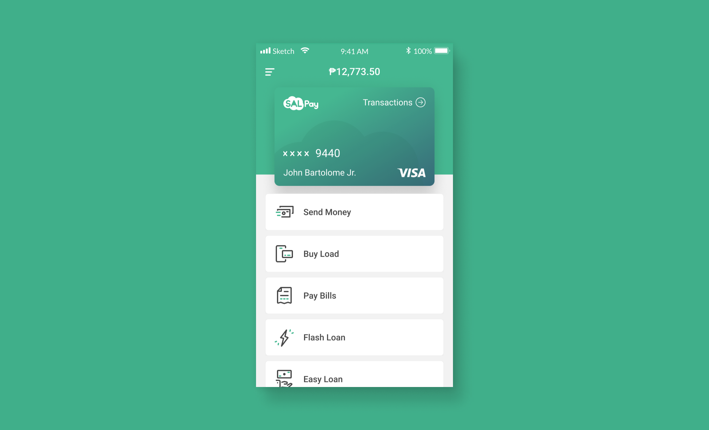
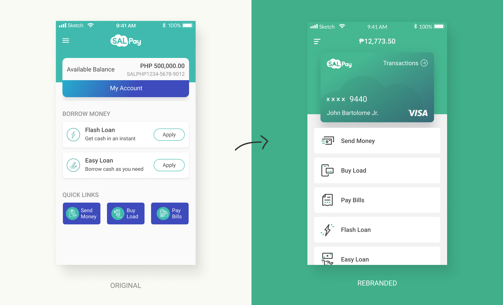
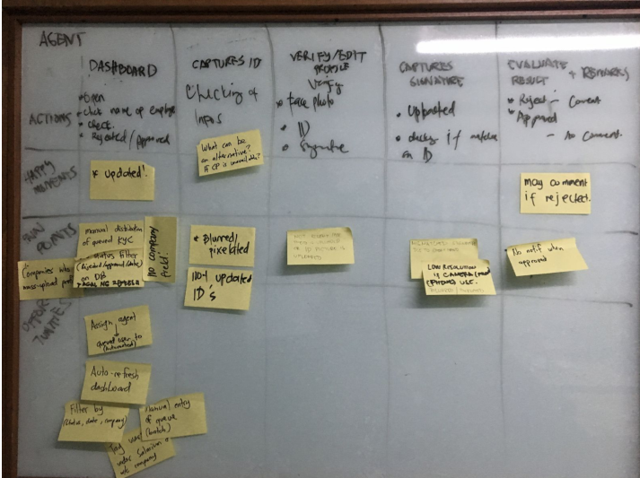

Digital Wallet App
Online identity verification design, and a rebrand makeover
Summary
SALPay was transitioning from a captured market to an open market where anyone in the country can sign-up for an account.
To have a competitive edge, we wanted to reduce the turn-around-time for wallet creation.
A rebrand was also deemed necessary to update SALPay's outdated designs and to align it with its goal of becoming a financial wellness app in the future.
•••
Case Study
•••
I. Identifying the Problem
Felix is a 23 year-old mid-senior call-center agent in a well-known BPO company somewhere in Alabang Center, Muntinlupa City.
His company is using a web-based HR platform called "Salarium" which handles their attendance monitoring and their payroll accounts. For their payroll, each of them are given access to an digital wallet called "SALPay" which they can use through their internet browser or their Android and iOS phone, and it comes with a physical debit card.
Using his SALPay app, he can easily transfer funds to other bank accounts, pay his bills without the hassle, buy prepaid load for his phone, and even apply for loans without any paperwork!
The SALPay app works well for him, but he wishes that this digital wallet is also accessible to his friends and family so he can send them funds with 0 fee.
He also hopes that the wallet approval will not be as tedious as he experienced. He remembered the time when he had to resubmit his application 3-times because of unresolved issues with either his ID's photo, his signature, or his misspelled data. It took him a week before he finally got approved!
It was to his great delight when he heard that the SALPay team is launching their open-access version soon, and comes with it is the app's and card's updated design and a same-day approval for the wallet.
•••
II. Challenges and Solutions
Branding Improvement
Working side-by-side with the marketing team, we made a proposal for SALPay’s improved branding and had it approved by the CEO. Learn more here about the rebranding process.
We also agreed to move away from teal to a greener hue which is more appropriate for the new SALPay tagline, “Financial well-being”.
Logo design by Kevin Macaraeg
The new colors defined for the rebranding of SALPay
Colors usage guideline in the app’s UI design
•••
UI Design Rebrand Alignment and Enhancements
The effort of improving SALPay’s overall visual identity includes re-alignment of the app’s UI design. Taking advantage of the rebrand effort, some enhancements to the UI were also proposed.
Original (left) vs Rebranded (right) Dashboard page.
Enhancements made:
- Account balance displayed at the top-center.
- Linear and consistent layout for the features being offered. Hierarchy is based on what the users use most from top to bottom. This also improves the legibility of the buttons’ content.
- “My Account” button is also replaced with the “Transaction” font-small on the card since clicking the what’s originally the “My Account” button leads to the account’s list of transactions.
Original (left) vs Rebranded (right) Login page. An interactive explainer panel is added on the left side of the desktop version to maximize the horizontal space.
Original (left) vs Rebranded (right) Locked Card state on the dashboard page.
I made the lock status more obvious. I also got rid of the disabled buttons and replaced them with a copy about what the user can or can’t do while the card is locked.
•••
App Store and Google Play Pages Update
We also had to make sure that the SALPay’s App Store and Google Play pages are up-to-date. It was a team effort, I created the outline and gave examples to benchmark like Transferwise and Revolut, the UX Copywriter filled all necessary information, the Content Writer gave input on the copy, and the Graphic Designer designed the images needed for the features section.
Outdated Google Play page
Rebranded version of the Google Play page. This was designed by Kevin Macaraeg.
•••
Profile Completion
To avoid overwhelming the user with one long form, I segmented the user’s profile into 3 parts. The save button also redirects the user to the next page for a more seamless experience.
I also had to make it clear for the user what steps to take next in order to proceed with his wallet creation. I did it by showing the requirements as an actionable checklist.
Profile completion dashboard
Complete profile form
Original (left) vs Rebranded (right) KYC dashboard. In the rebranded version, a small check badge replaced the big check image to make it more balanced and to keep the icons visible at all times.
•••
KYC Compliance Officer Dashboard
To verify the user's identity, there are Compliance Officers in the backend who do the verification manually. I was asked to create a proposal for the new version the the admin dashboard they are using for verification.
To get their insights and the pain points they have, I organized a user journey mapping activity for them.
Opportunities such as auto-assignment and auto-balancing were identified as solutions for some of the pain points.
Wireframe of the compliance officer’s dashboard.
This is the first page he sees once he logs in. One of the key-features, as identified from the user-journey mapping, is the auto-balancing and auto-assignment of KYC applicants to agents, aside from that, the agent can also do the ff.:
- Set his status if available which means he will be assigned with a queued KYC applicant, or unavailable which means he will not be assigned with anyone.
- See the next in line KYC applicant assigned to him.
•••
User’s Real-time and Online Verification
When a user submits his profile for verification, he is automatically queued. I had to make sure that the user’s expectations are met by adding visual cues about his queue status and valid ID FAQs on the right side.
Waiting room for queued KYC applicants.
When a user submits his profile for verification, he is automatically queued. I had to make sure that the user’s expectations are met by adding visual cues about his queue status and valid ID FAQs on the right side.
Agent calls the next in line KYC applicant.
•••
Iconography
To maintain visual consistency for the icons across the app, I created a grid based on what the famous companies like IBM and Google use in their design system.
Iconography Grid and Spacing Guidelines
Feature icons (32px Base) are special icons used to represent SALPay specific features such as apply for loans, send money, save money, buy load, verify email address, etc.
Feature Icons
Badge icons (80px Base) are used as vector illustrations to add personality to our pages or cards such as profile checklist cards, empty states, error states, etc.
Badge Icons
•••
III. Conclusion
Designing the whole online verification process from customer's end to our agent's end requires different methodologies to capture what needs to be done and how to communicate it to the rest of the team.
Rebranding SALPay in the midst of continuous development of its original version required our team to effectively manage the product’s backlog items, what to prioritize, when to have trade-offs, and how to keep everyone of us in sync. During this period, everyone also recognized the importance of documentations for clarity and precision when building the next version of SALPay.
•••
IV. What Could Have Been Done Better
The rebranded and enhanced visual design of the product could have been tested with users first to compare its usability with the old version. Testing could have also been done earlier in the process even before the redesign, so the enhancements would have been based on data and not just on assumptions.
•••
Background
Company:
Salarium
Project Duration:
June 2018 - May 2019 (11 Months)
Role:
UX/UI Designer
Responsibility:
- Ownership of the entire product design making sure of the quality of its design all through-out the entire software development process, from conceptualization to production, and later on, iterations.
- Initiated, documented, and established its first comprehensive design pattern library.
- Spearheaded the creation of its Copy Repository, making sure that all copy in the app and being generated by the system like email and SMS notifications are in one centralized place.
- Teamed-up with the marketing to sync all the marketing collaterals and product assets with the new branding of SALPay.
Reference:
- SALPay in Apple’s App Store
- SALPay in Google’s Play Store
•••
For it is God who works in me,
both to will and to work for his good pleasure. - Phi 2:13